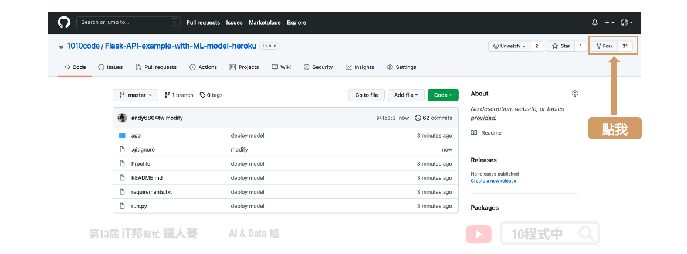
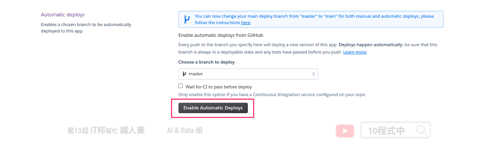
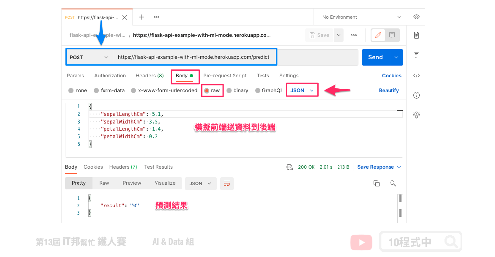

[Day 30] 使用 Heroku 部署機器學習 API
今日學習目標
- 動手部署自己的機器學習 API
- 使用 Heroku 雲端平台部署應用程式
範例程式：Code
前言
開發的最後一哩路部署應用。部署 API 必須在一個穩定的伺服器上運行，大多數企業可能會租用雲端的虛擬伺服器。常見的雲端平台三巨頭有 Google Cloud Platform (GCP)、Amazon Web Service (AWS) 以及 Microsoft Azure。以上三家供應商都有提供免費的試用額度以及部署的教學，另外雲端伺服器計費的方式是採用多少付多少的概念收費。若有 GCP 使用需求可以參考我過去所錄製的系列教學影片 GCP教學-Python。
Heroku 雲端平台
Heroku 是一個支援多種程式語言的雲平台即服務。並且提供一個~~免費~~(現在要付費了)的雲端服務，這個雲端平台~~一個帳號可以免費建立五個專案~~，雖然是~~免費當然也有使用上的限制。例如：(1) 超過30分鐘閒置將會進入睡眠狀態，之後重新啟動 API 時會需要等待一些時間才有回應。(2) 500MB的儲存空間限制。當然 Heroku 也提供多種語言的部署環境像是 Ruby、Node.js、PHP、Go、Python ...等。~~
本篇文章會教你如何部署 Python 的 Flask API。
1. 前置作業
1.1) 範例程式碼
這一篇文章將以花朵分類 API 為例，拿一個先已經訓練好的模型進行 Python Flask API 的開發與部署。至於模型的訓練和 Flask API 的詳細內容這邊就不細提，若各位想了解的可以參考昨天的內容 [Day 29] 使用 Python Flask 架設 API 吧！。另外建議大家可以參考下面這份程式碼進行今天的內容實作，使用 GitHub 並將程式 fork 到自己的帳號中。

以下簡單說明專案內部署 Heroku 的重要檔案。
1.2 Procfile 設定檔
Procfile 這個檔案是要告訴 Heroku 要如何啟動這個 web app，在 Heroku 裡，執行 Python 要使用 Gunicorn 來啟動 web server。所以在 requirements.txt 裡，請記得要輸入 gunicorn。Procfile 檔案，的內容如下：
web gunicorn run:app
2. 部署 Heroku 專案
2.1 在 Heroku 建立應用程式
建立帳號後右上角「 New 」中的「 Create new app 」建立第一個應用程式：

2.2 專案與 GitHub 連動
這一步驟是將 GitHub 上的專案直接與 Heroku 做連動，你也可以直接 Fork 這個專案直接實作。或是你也可以透過 Heroku CLI 直接將本機的程式碼部署到 Heroku 主機中。部署階段蠻吃大家 Git 版控的能力，基本的教學這裡就不贅述，想了解更多 Git 技巧可以參考。

點選 Enable Automatic Deploys 連動後可以選擇自動部署。當你 GitHub 專案的程式碼有更新時他會自動幫你把更新的程式部署到 Heroku 中。

由於自動更新與部署會有上限次數，當你的專案在 GitHub 更新次數太頻繁。Heroku 就會停止自動發布，這時候你也可以試試手動部署。

部署專案
確認以下事情都完成後就可以部署程式囉！記得我們有跟 GitHub 連動，當你的專案 git push 後 Heroku 就會幫你自動部署了。你可以從 Activity 內看到部署狀態，也能從右上角 More -> View logs 觀看後台 Log 訊息。或者你也可以從 Deploy 內手動部署也行。
- Python Flask API 程式撰寫 ✅
- 專案內建立 Procfile ✅
- Heroku 建立專案 ✅
- Heroku 與 GitHub連動 ✅
部署完成後你可以在 Settings 內的 Domains 看到你的雲端連結，這個連結點下去就能看到我們的API囉！
https://flask-api-example-with-ml-mode.herokuapp.com

測試 API
昨天已經跟大家介紹 Postman 的使用方式。今天我們就來試試部署在雲端伺服器的結果，基本上測試的方式跟昨天在本機測試的方法一模一樣。打開 Postman 點選 POST 並貼上 API 網址 https://專案名稱.herokuapp.com/predict。並模擬前端使用者發送數值 Body -> raw -> JSON 將花朵的四個參數以 JSON 格式傳給後端 API。

本系列教學內容及範例程式都可以從我的 GitHub 取得！